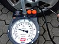

inflation_pressure

Definition: Cold inflation pressure is the inflation pressure of tires before a car is driven and the tires (tyres) warmed up. Recommended cold inflation pressure is displayed on the owner's manual and on the placard (or sticker) attached to the vehicle door edge, pillar, glovebox door or fuel filler flap. Most passenger cars are recommended to have a tire pressure of 2.1 to 2.4 bars (210 to 240 kPa; 30 to 35 psi) when not warmed by driving. A 2001 NHTSA study found that 40% of passenger cars have at least one tire under-inflated by 0.4 bars (6 psi) or more. Drivers are encouraged to make sure their tires are adequately inflated, as under inflated tires can greatly reduce fuel economy, increase emissions, cause increased wear on the edges of the tread surface, and can lead to overheating and premature failure of the tire. Excessive pressure, on the other hand, will lead to impact-breaks, decreased braking performance, and cause increased wear on the center part of the tread surface.
Source: Wikipedia
Wikipedia Page (Something wrong with this association? Let us know.)
Wikidata Page (Something wrong with this association? Let us know.)
Occurs in: